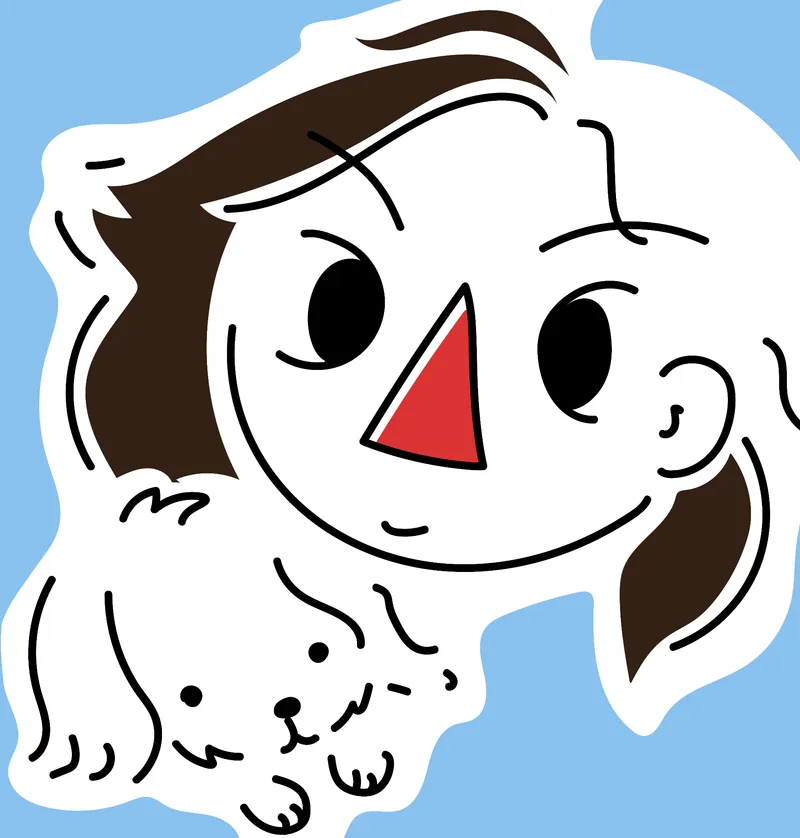

01 / 10
LUMA — Mascote IFSC Design
LUMA, mascote do curso de Design do IFSC: poses, aplicações em produtos, vídeo e manual de uso.
5+anos de experiência em design
Guilherme Eccel (nascido em 2002 em Porto Alegre-RS) é um designer, editor de vídeo, artista 3D e ilustrador brasileiro. É bacharel em Design pelo Instituto Federal de Santa Catarina (IFSC), em Florianópolis. Trabalhou na A3 Design entre 2024 e 2025 e desde então atua como freelancer.
Domina diversos softwares criativos, incluindo Adobe Illustrator, Photoshop, Premiere Pro, After Effects, Affinity, Canva, Blender e Clip Studio Paint, além de outras ferramentas de design, ilustração, modelagem 3D e produção audiovisual.
Clique numa ferramenta para ver trabalhos feitos com ela.
Projetos selecionados. Filtre por categoria e clique num projeto para ver todas as imagens.
LUMA, mascote do curso de Design do IFSC: poses, aplicações em produtos, vídeo e manual de uso.
Identidade completa para o Hortifruti Rama Forte, do símbolo floral e da fachada ao mascote caqui e aos posts.
Jogo de tabuleiro modular para 2 jogadores, finalista do SBoardGames no SBGames 2025.
Identidade, mascote peru e camisetas para a empresa júnior C2E Engenharia Elétrica.
Logotipo e identidade para uma quitanda de origem nipo-brasileira, com o kanji 金城 em selo circular.
Coração em circuito e mão acolhedora, aplicados em cartões de visita e uniformes.
Mascote e embalagem para a Cookie Haven, com o personagem aplicado na caixa de cookies.
Mascote pintinho criado para a EJEP, aplicado em pôster.
Telas para o site institucional da Tanac: página Sobre, Código de Conduta e blocos de Unidades de Negócios, Certificações e P&D.
Telas de e-commerce da Loja Grendene para as marcas Ipanema e Rider Kids: banners, vitrines de produtos, ofertas, personagens e newsletter.
Desenhar é um hobby desde criança — daí vieram a pintura digital e a modelagem 3D.
Vamos conversar?
Se você procura um designer comprometido com criatividade e qualidade, será um prazer conversar sobre seu projeto.

Vídeo de apresentação da LUMA
Vídeo de apresentação da LUMA